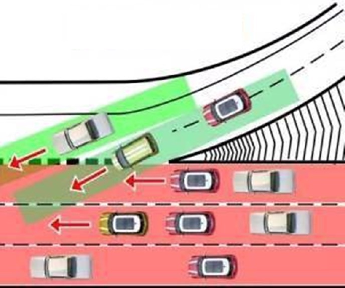
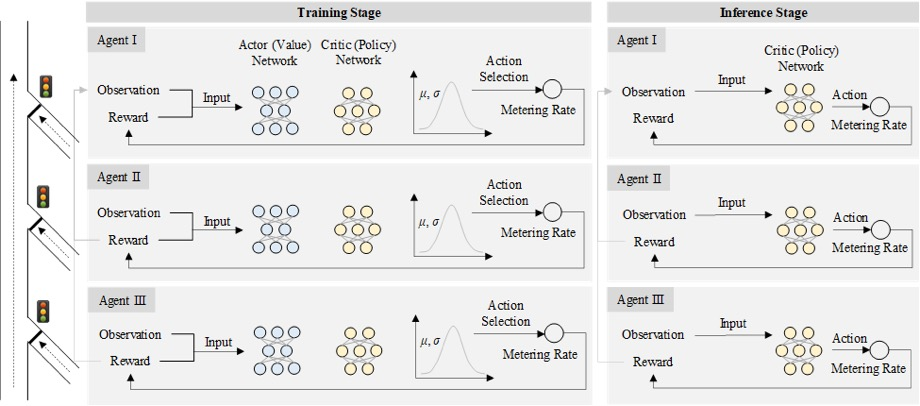
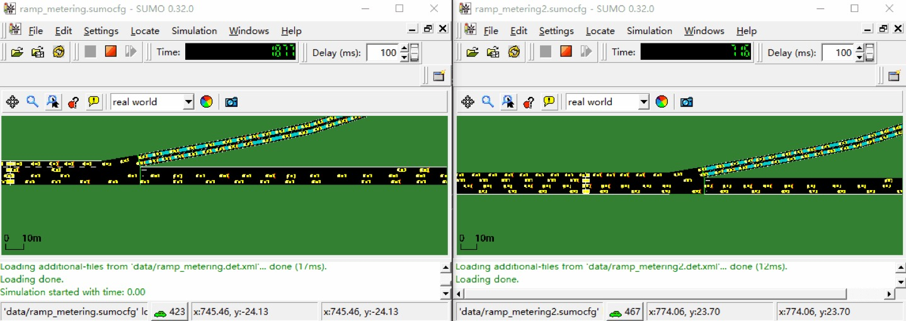
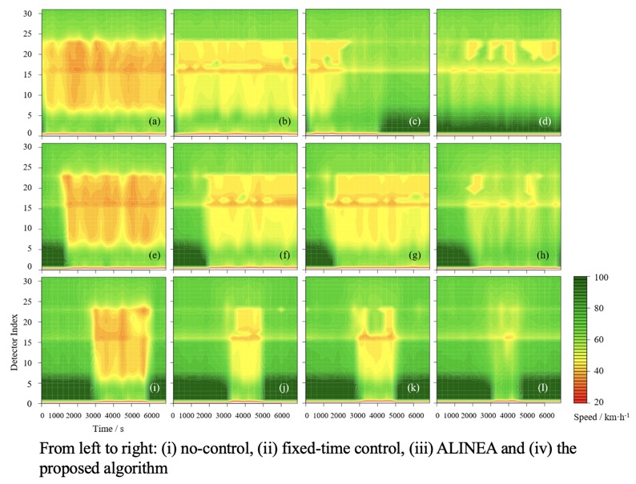
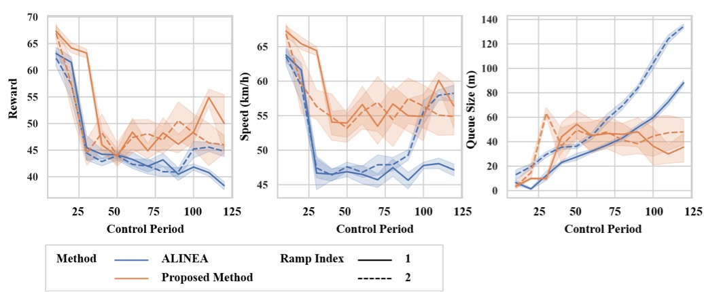

City Grid
2019-01
Background
In this work, I cooperated with my partner Fuwen Deng and focused on the application of reinforcement learning to the ramp metering problem. We proposed a novel ramp metering algorithm embedding multi-agent deep reinforcement learning techniques. We also built up a simulation platform based on SUMO to simplify the implementation of the algorithm.

Details
We used Proximal Policy Optimization or PPO as the reinforcement learning framework. The algorithm adopts a classical Actor-Critic framework which combines the strong points of policy-based and value-based methods, and imports the Kullback–Leibler divergence to adjust the update rate of the policy function automatically for good adaptability.

We also developed a simulation platform to simplify the implementation of the algorithm. The ML framework to implement RL algorithms is keras + tensorflow, the SUMO works as traffic simulator, and Traci is used for the communication between python scripts (server) and SUMO simulator (client).

A set of simulation experiments – encompassing both single and multi-ramp scenarios with various traffic demand profiles – are conducted

Comparing with the state-of-the-practice ramp metering methods, the simulation results demonstrate that the proposed DRL-based algorithm outperforms in a comprehensive evaluation index considering mainstream speed at bottleneck and queue size on ramp
Future Work - Simulation as a Service
We are developing a simulation testbed for urban traffic signal control of large scale intersection groups. The final target of this project is providing an open-source Python package to embed multi-agent reinforcement learning algorithms for large scale transportation management, also with a Web GUI for visualization.